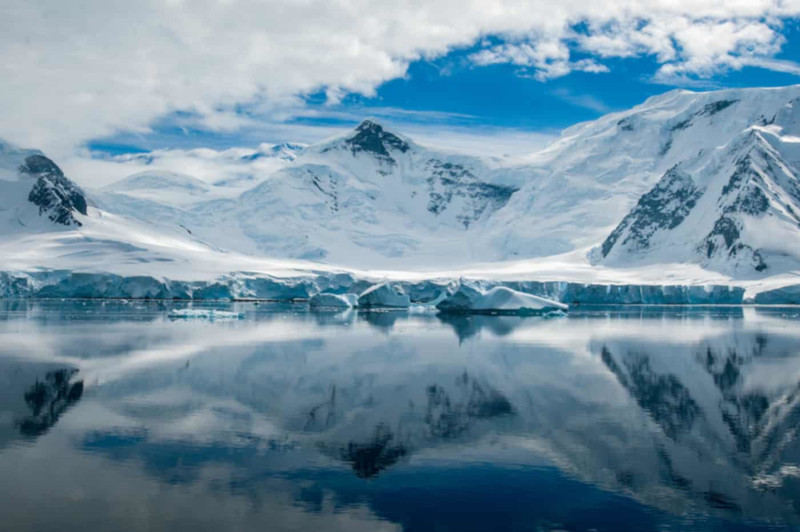
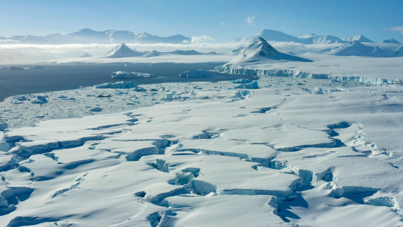

Antártida
Antártida ou Antártica é o mais meridional e o segundo menor dos continentes (maior apenas que a Austrália),com uma superfície de 14 milhões de quilômetros.Rodeia o polo Sul, e por esse motivo está quase completamente coberta por enormes geleiras (glaciares), exceção feita a algumas zonas de elevado aclive nas cadeias montanhosas e à extremidade norte da península Antártica. Sua formação se deu pela separação do antigo supercontinente Gondwana há aproximadamente 100 milhões de anos e seu resfriamento aconteceu nos últimos 35 milhões de anos.
Características
É o continente mais frio, mais seco, com a maior média de altitude e de maior índice de ventos fortes do planeta. A temperatura mais baixa da Terra (-89,2 °C) foi registrada na Antártida, sendo a temperatura média na costa, durante o verão, de -10 °C; no interior do continente, é de -40 °C.Muitos autores o consideram um grande deserto polar, pela baixa taxa de precipitação no interior do continente.A altitude média da Antártida é de aproximadamente 2 000 metros.Ventanias com velocidades de aproximadamente 100 km/h são comuns e podem durar vários dias.Ventos de até 320 km/h já foram registrados na área costeira.